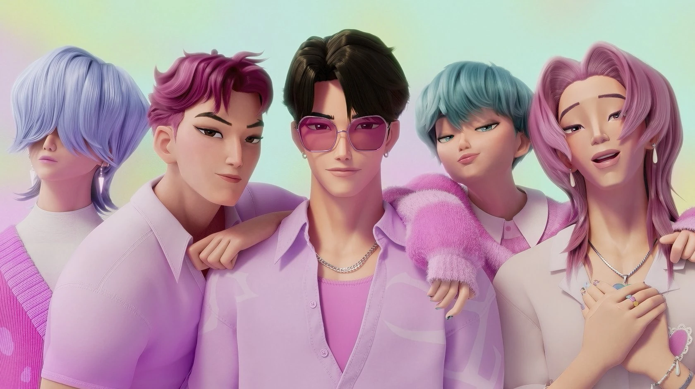
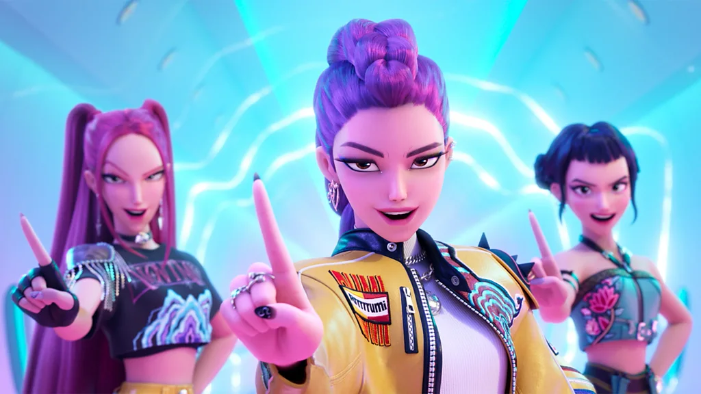
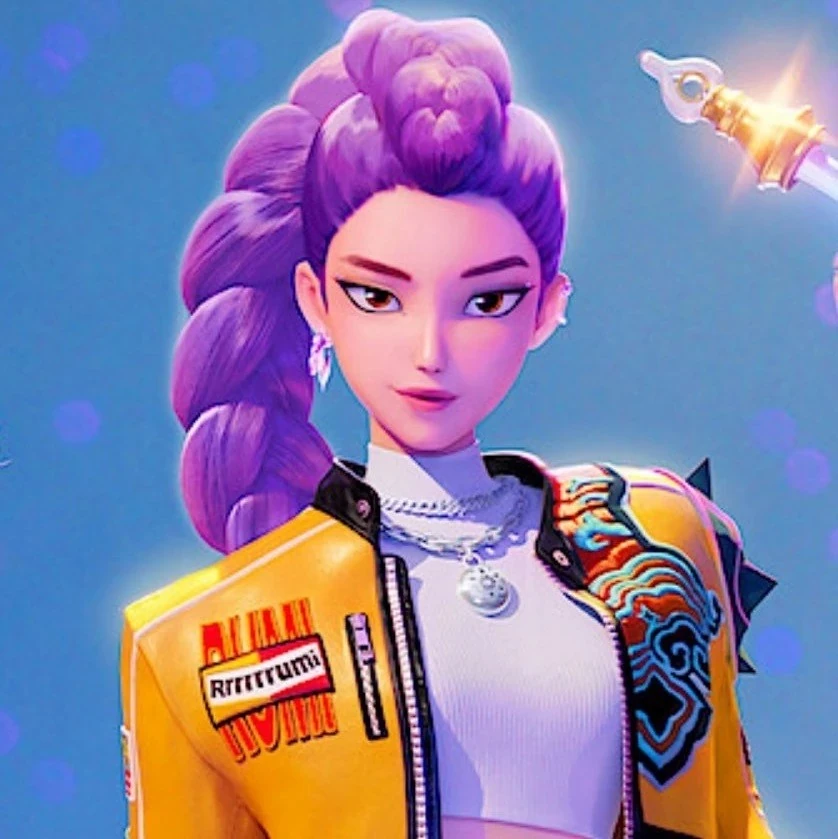
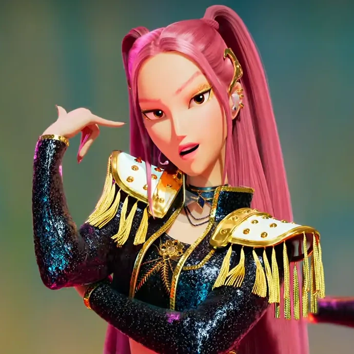
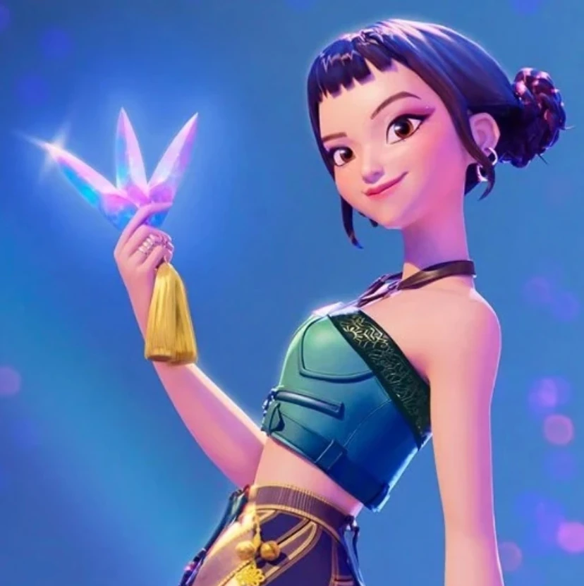
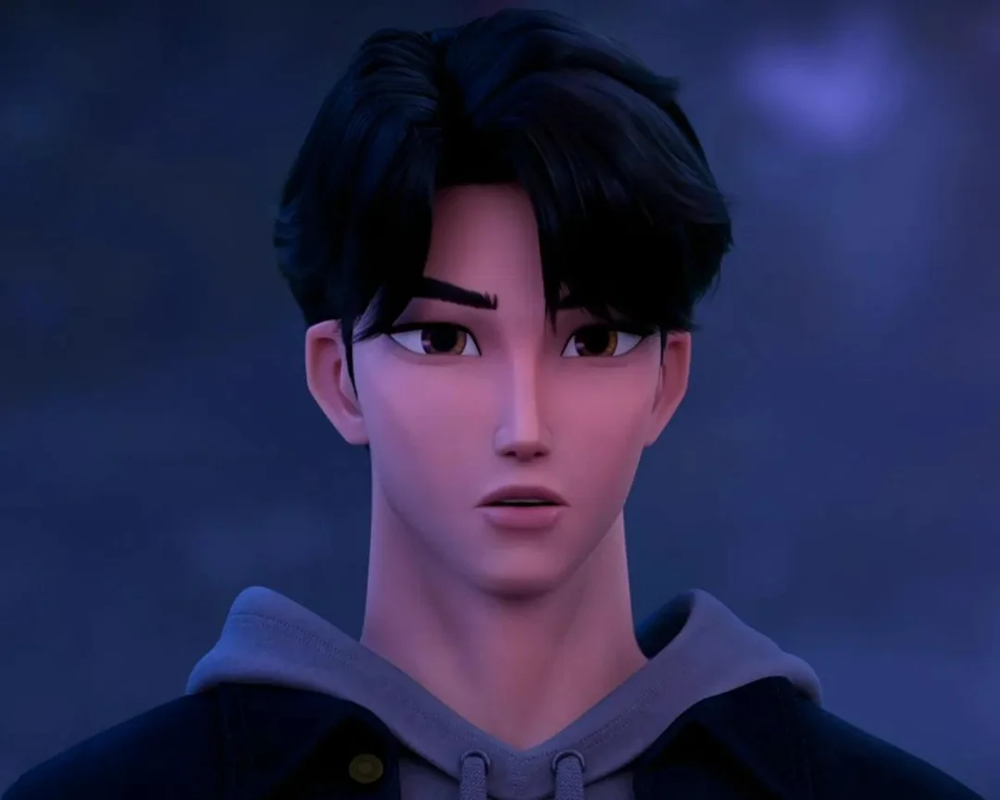

Galeria




KPop Demon Hunters (ou "Guerreiras do K-Pop") segue um grupo feminino de K-Pop, HUNTR/X (pronúncia: "Rântríks") — Rumi, Mira e Zoey — que levam uma vida dupla como caçadoras de demônios, defendendo a humanidade das ameaças sobrenaturais.
Nesse mundo, demônios tentam infiltrar o mundo humano para roubar almas. As caçadoras de demônios usam o poder de suas vozes para manter uma barreira — chamada Honmoon (pronúncia: "Rônmun") — que protegem o mundo humano contra a invasão demoníaca. Seu objetivo é tornar o Honmoon dourado, selando a barreira por completo.
Uma boy band rival chamada Saja Boys, secretamente composta de demônios, ameaça enfraquecer a influência de HUNTR/X roubando seus fãs e diluindo seu poder. Enquanto isso, a vocalista, Rumi, luta para esconder sua herança demoníaca e o custo emocional de manter identidades duplas.
Conforme os conflitos escalam, HUNTR/X deve decidir se lutará com força bruta ou com vulnerabilidade e autoaceitação. Enfim, Rumi confronta sua vergonha, o grupo se une e elas derrotam as forças demoníacas enquanto forjam um laço mais forte com seus fãs e consigo mesmas.




KPOP Demon Hunters não é apenas espetáculo e ação — ele carrega uma resonância mais profunda sobre identidade, vergonha, pressão de desempenho e saúde mental.
Identidade & Auto-Aceitação: A luta de Rumi para esconder sua herança demoníaca simboliza como muitas pessoas escondem partes de si mesmas com medo do julgamento. O movie mostra que abraçar sua identidade completa, mesmo as partes que você teme, é essencial para descobrir sua verdadeira força.
Pressão de Desempenho & Esgotamento: Como ídolas, HUNTR/X carregam o fardo de sempre serem perfeitas, sempre "disponíveis." Isso reflete problemas reais de saúde mental na indústria do entretenimento — exaustão, síndrome do impostor e medo de decepcionar seus fãs. O filme critica sutilmente a pressão para manter personas perfeitas.
Trauma & Conflito Emocional: As respostas emocionais de Mira e Zoey à traição e segredos mostram como mágoas e desconfiança podem romper até laços mais fortes. O filme não mede esforços para mostrar como até mesmo heroínas sofrem com dores emocionais.
Conexão & Cura: O ponto de virada é quando Rumi confronta sua vergonha em voz alta, ao invés de escondê-la. O ato de vulnerabilidade, além de sua conexão com Jinu, cura sua voz e ajuda a reunir o grupo. O movie demonstra que cura frequentemente ocorre através de conexões, honestidade e compaixão compartilhada — não apenas através de encarar seus problemas sozinhe.

